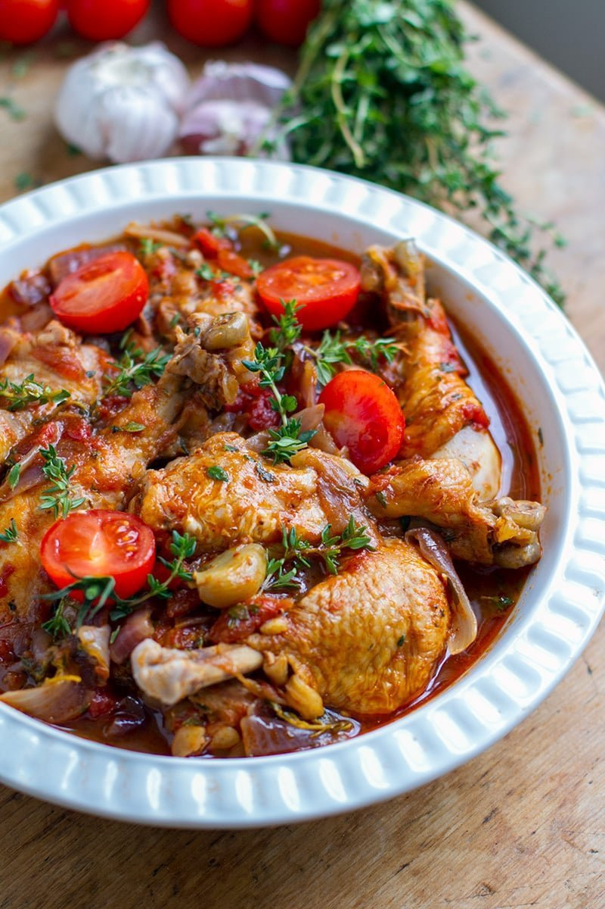

Italian chicken

Description
This is a healthy, delicious, easy dinner! The best part is that it cooks
all in one skillet so there is hardly any mess!
Ingredients
- 1 tablespoon olive oil
- 4 skinless, boneless chicken breast halves, cubed
- 2 cloves garlic, chopped, or to taste
- ½ cup red cooking wine
- 1 (28 ounce) can Italian-style diced tomatoes
- 8 ounces small seashell pasta
- 5 ounces fresh spinach, chopped
- 1 cup shredded mozzarella cheese
Steps
-
Heat the olive oil in a large skillet with a lid over medium heat, and
cook and stir the chicken and garlic until the chicken is no longer pink
in the center, 5 to 8 minutes. Pour the wine and diced tomatoes with
their juice into the skillet, and bring to a boil over high heat while
scraping any browned bits of food off of the bottom of the pan with a
wooden spoon.
-
Stir in the shell pasta, and return to a boil. Cook uncovered, stirring
occasionally, until the shells have cooked through, but are still firm
to the bite, about 10 minutes. Spread the spinach over the top of the
pasta, cover, and simmer until the spinach leaves are cooked, about 5
minutes. Sprinkle the mozzarella cheese evenly over the skillet, and
simmer until the cheese has melted and the pasta is bubbling, about 5
minutes.